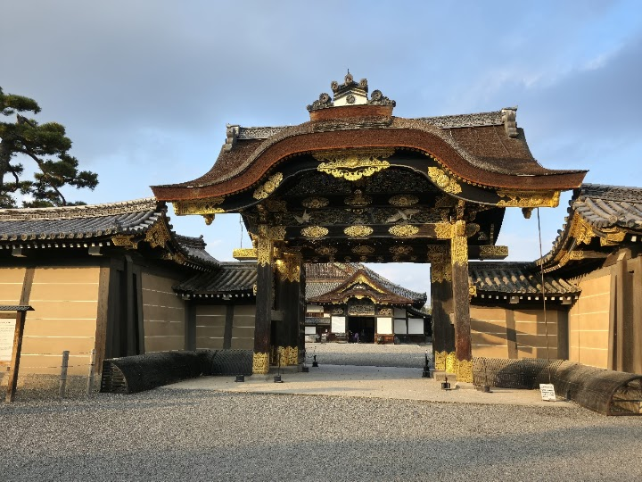
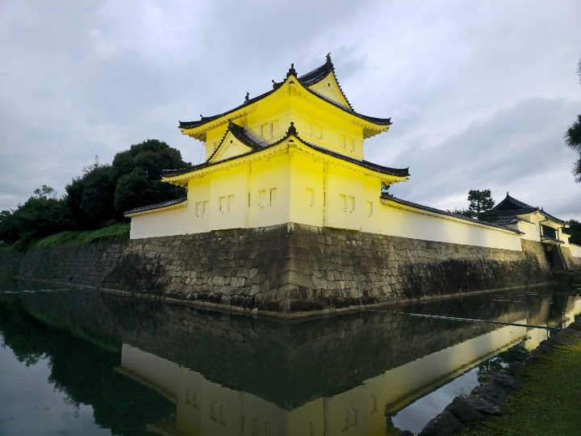
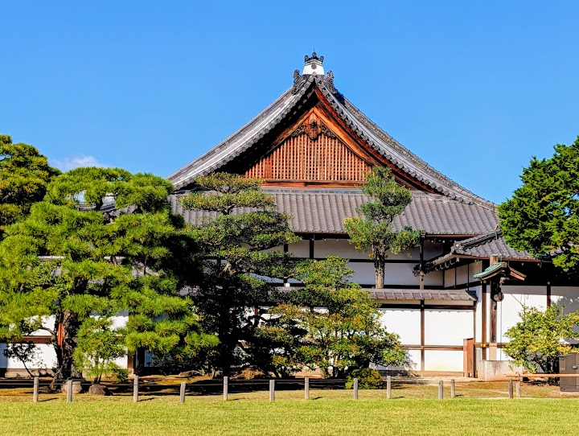
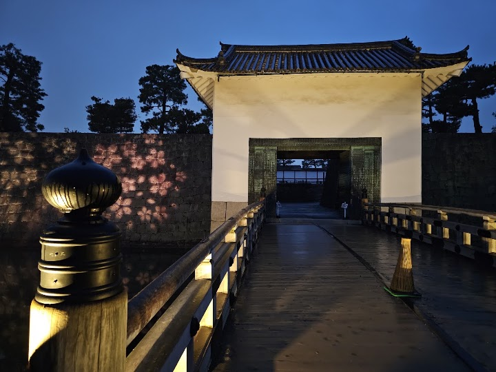
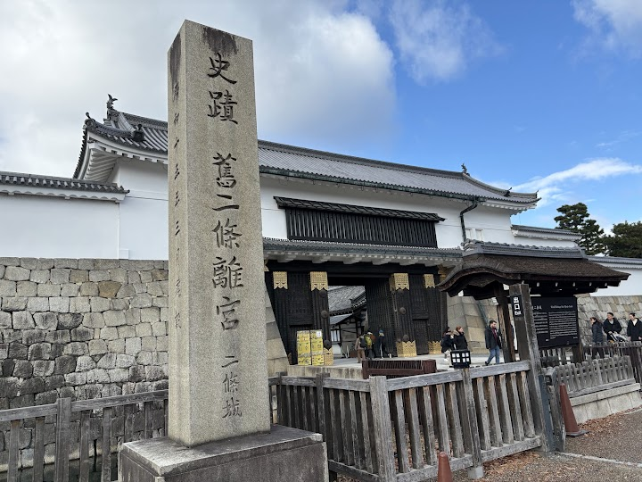

Nijō Castle
Built in 1603, this cypress-wood castle with extensive gardens was a home for the shogun Ieyasu.
Open in Google Maps (street view, more photos and reviews there)






Visitor tips on finding it and getting there
A Captivating Walk Through Samurai History (And Mind the Floors!) If you want to experience Kyoto's history beyond its incredible temples, Nijo Castle is an absolute must-visit. Unlike the classic white-walled castles of Japan, Nijo is a stunning, sprawling flatland palace complex that gives you a genuine look into the power and daily life of the Tokugawa shogunate. The Highlights: The "Nightingale" Floors: Walking through the Ninomaru Palace is an immersive experience. The wooden floors are deliberately engineered to squeak and chirp like birds when stepped on—an ingenious, ancient security s
Nijō Castle was built between 1603 and 1626 at the order of the shogun Tokugawa Ieyasu. The castle grounds are protected by a moat and massive stone walls. Inside the complex are two palaces, Ninomaru and Honmaru. I only visited the former, which contains a series of beautiful paintings (although photography is unfortunately not allowed) and is famous for its "nightingale floors", which chirp like birds when walked upon as a security measure against intruders. In addition to the palaces, you can admire two beautiful gardens, Ninomaru Garden and Seiryu-en Garden, as well as the remains of the k